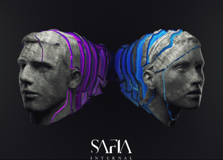

The Thrill Of It All - Sam Smith
Sam Smith 2017 Pop
Lista de reprodução
Arctic Monkeys - Do I Wanna Know
Drake - Nice For What
Drake - Legend
Migos - Walk It Talk It ft. Drake
Kendrick Lamar - HUMBLE
Drake - God's Plan